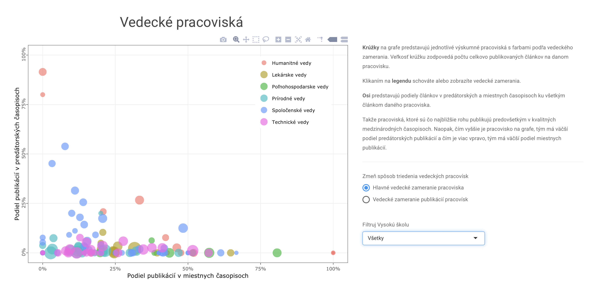

1 Úvod do jazyka R
Aplikovaná štatistika sa dnes robí na počítači. Existuje mnoho rôznych softvérov, ktoré môžete používať. My budeme používať jazyk R, ktorý má mnohé výhody.
- Je široko používaný v komunite (nielen) štatistikov, dátových analytikov, programátorov, vedcov, taktiež v priemysle.
- Jeho funkcionalita je veľmi široká. Veľmi veľa vecí sa s ním dá urobiť (napríklad aj táto webstránka).
- Je zadarmo.
1.1 R
Existuje neskutočné množstvo tutoriálov a veľmi kvalitných materiálov, ktoré sú vhodné na oboznámenie sa s R. Tu sú odkazy na niektoré z nich, ktoré považujem sa obzvlášť dobré.
- Rafael Irizarry: Data science in R https://rafalab.github.io/dsbook/data.html
- W. N. Venables, D. M. Smith and the R Core Team. “An Introduction to R” https://cran.r-project.org/doc/manuals/r-release/R-intro.pdf
- Wickham, Hadley, and Garrett Grolemund. R for data science: import, tidy, transform, visualize, and model data. ” O’Reilly Media, Inc.”, 2016. https://r4ds.had.co.nz
- Grant McDermott: Intro to Data Science https://github.com/uo-ec607/lectures
Kvalitné materiály sú v angličtine. Tak to skrátka je a neznalosť angličtiny výrazne znepríjemňuje, skoro až znemožnuje efektívnu prácu.
Takto vyzerá program RStudio, to je akoby obal, ktorý nám umožňuje efektívne a pohodlne pracovať s jazykom R.
Jednotlivé bloky sa dajú preusporiadať podľa preferencií používateľa. Treba si stiahnuť a nainštalovať Rko. To má však len jednoduché používateľné rozhranie (tomuto zvykneme hovoriť aj user interface). Nadstavbou nad obyčajným Rkovým prehliadačom je RStudio, ktoré je komerčný produkt, jeho desktop verzia (pre naše potreby úplne postačujúca) je však zadarmo.
1.2 Nejaké príklady R
Tu sú nejaké príklady aplikácií, ktoré sa dajú v R robiť. Možností je naozaj veľmi veľa.


1.3 Nevýhody R
Nevýhodou Rka je ťažký začiatok. Chvíľu trvá kým si človek zvykne na používanie, toto je špeciálne pravdivé pre ľudí, ktorí majú len málo skúseností s programovaním v nejakom inom jazyku.
Pre obrovské úlohy nemusí byť efektívny. Preto sa častokrát používa Rko na vytvorenie prototypu a keď treba problém aplikovať na obrovské dáta (škálovať) alebo nás zaujíma rýchlosť, tak iné programovacie jazyky môžu byť preferované.
Dôležitou vlastnosťou Rka je, že mnoho knižníc-programov je vytvorených nadšencami, a to zadarmo. Tieto sú častokrát rôznej kvality. Tie isté veci sa dajú robiť rôznymi spôsobmi - tie majú svoje výhody aj nevýhody.
1.4 A čo teraz.
Neexistuje žiaden zázračný tutoriál, ktorý je rádovo oveľa lepší ako iné. Čo je nutné, je dať tomu čas. Skúšať veci, vymýšľať nové veci, meniť existujúce, zaseknúť sa, rozbehnúť sa… Naučiť sa pracovať s R (ako aj programovať v akomkoľvek inom jazyku) sa vôbec nedá bez toho, aby ste tomu venovali veľké množstvo času.
Dobrou správou je, že syntax sa netreba učiť naspamäť. Skrátka si ju zapamätáte, keď s ňou budete robiť a znova zabudnete, keď s ňou prestanete robiť. Je úplne v poriadku nepamätať si veci. Nepamätáme si síce veci ale v čase sa učíme výrazne rýchlejšie ich vyhľadávať na internete. Asi nebude prekvapením, že schopnosť vyhľadávať informácie alebo riešiť problémy vyhľadávaním na internete je absolútne kľúčová.
1.5 Demonštrácia v R
Príklady v Rku budú častokrát inšpirované publikáciou P. DALGAARD - Introductory Statistics with R, Springer 2nd edition.
# Rko môžeme používať napríklad aj ako kalkulačku
2+2[1] 4exp(2)[1] 7.389056# Za touto mriezkou je komentár.Rozličné textové prehliadače majú nastavané rôzne kódovanie. Preto, ak chceme produkovať čitateľný kód je dobrým nápadom sa vyhýbať dĺžňom a mäkčeňom.
# Je dobrou praxou p4sa& koment!re v angli@tine alebo aspo? bez diakritiky.
# Je dobrou praxou pisat komentare v anglictine alebo aspon bez diakritiky.
# It is a good idea to write comments in english or without special symbols. Nakreslíme nejaké náhodne vygenerované čísla.
#plot a vector of 100 realizations of normally distributed
# random variables with mean 0 and variance 1
plot(rnorm(100))Vytvoríme 15 ďalších náhodných čísel.
#create a vector of 15 realizations of normally distributed random variables with mean 0 and variance 1
rnorm(15) [1] 0.60011177 0.59831676 -0.39447226 -0.82175840 -0.14447760 1.57328819
[7] -0.05915091 -0.11675828 -0.53655106 0.73023981 0.28953291 -0.25041561
[13] -0.67824199 -0.07239594 2.03249052Do premennej uloźíme číslo. Na to použijeme šípku. Odteraz bude mať Rko uložené, že v x bude 2.
#assign number "2" to variable "x"
x <- 2Vypísaním sa pozrieme, čo je vnútri.
#take a look on what is inside x
x[1] 2S objektami, ktoré sú v pamäti môžeme robiť všelijaké operácie. Napríklad ich sčitovať.
#calculate x+x
x + x[1] 4Šípkou si uložíme do premennej aj skupinu objektov, napríklad čísel.
#save a vector of weights. this is a column vector with 6 elements
weight <- c(60, 72, 57, 90, 95, 72)
weight[1] 60 72 57 90 95 72#save a vector of heights
height <- c(1.75, 1.80, 1.65, 1.90, 1.74, 1.91)A robíme s nimi všelijaké aritmetické operácie.
#operators "/" and "^2" are applied element-wise
bmi <- weight/height^2
bmi[1] 19.59184 22.22222 20.93664 24.93075 31.37799 19.73630Sčítanie elementov vektora.
#sum up all the elements in a vector
sum(weight)[1] 446Rôzne operácie môžeme skladať.
#calculate arithmetic mean
sum(weight)/length(weight)[1] 74.33333xbar <- sum(weight)/length(weight)
weight - xbar[1] -14.333333 -2.333333 -17.333333 15.666667 20.666667 -2.333333(weight - xbar)^2[1] 205.444444 5.444444 300.444444 245.444444 427.111111 5.444444sum((weight - xbar)^2)[1] 1189.333#estimate the standard deviation
sqrt(sum((weight - xbar)^2)/(length(weight) - 1))[1] 15.42293Na všetky bežné operácie už máme predpripravené funkcie priamo v Rku.
#compare with built-in functions "mean" and "sd"
mean(weight)[1] 74.33333sd(weight)[1] 15.42293Ako aj napríklad na testovanie hypotézy, či je stredná hodnota nejakej premennej rovná určitej hodnote pomocou t-testu.
#one-sample t-test that mean is equal to 22.5
t.test(bmi, mu=22.5)
One Sample t-test
data: bmi
t = 0.34488, df = 5, p-value = 0.7442
alternative hypothesis: true mean is not equal to 22.5
95 percent confidence interval:
18.41734 27.84791
sample estimates:
mean of x
23.13262 #we cannot rejectNeodmysliteľnou časťou dátovej analýzy je spoznávanie vzťahov medzi rôznymi premennými.
#what is the relationship between height and weight?
plot(height,weight)
hh <- c(1.65, 1.70, 1.75, 1.80, 1.85, 1.90)
lines(hh, 22.5 * hh^2)args(plot.default)function (x, y = NULL, type = "p", xlim = NULL, ylim = NULL,
log = "", main = NULL, sub = NULL, xlab = NULL, ylab = NULL,
ann = par("ann"), axes = TRUE, frame.plot = axes, panel.first = NULL,
panel.last = NULL, asp = NA, xgap.axis = NA, ygap.axis = NA,
...)
NULLV rámci prostredia R nemusíme pracovať len s číslami. Pokojne to môžu byť texty.
#working with texts
c("Huey","Dewey","Louie")[1] "Huey" "Dewey" "Louie"c('Huey','Dewey','Louie')[1] "Huey" "Dewey" "Louie"c(T,T,F,T)[1] TRUE TRUE FALSE TRUEbmi > 25[1] FALSE FALSE FALSE FALSE TRUE FALSEcat(c("Huey","Dewey","Louie"))Huey Dewey Louiecat("Huey","Dewey","Louie", "\n")Huey Dewey Louie cat("What is \"R\"?\n")What is "R"?Pomocou funkcie c() zreťazíme rôzne objekty do jedného.
#c as concatenate
c(42,57,12,39,1,3,4)[1] 42 57 12 39 1 3 4x <- c(1, 2, 3)
y <- c(10, 20)
c(x, y, 5)[1] 1 2 3 10 20 5x <- c(red="Huey", blue="Dewey", green="Louie")
x red blue green
"Huey" "Dewey" "Louie" K názvom elementov pristupujeme pomocou funkcie names().
#names of elements
names(x)[1] "red" "blue" "green"Zreťazením rôznych typov objektov Rko zmení ich typ. Toto aj dobré aj zlé. Dobré je to, lebo to vie urobiť písanie kódu pohodlnejším. Zlé je to, lebo to môže zneprehľadniť prácu, Rovnaký objekt FALSE môže byť chápaný aj ako číslo, aj ako textový reťazec, aj ako logická premenná.
#concatenating may change type of object
c(FALSE, 3)[1] 0 3c(pi, "abc")[1] "3.14159265358979" "abc" c(FALSE, "abc")[1] "FALSE" "abc" Postupnosť čísel získame použitím seq().
#create sequence
seq(4,9)[1] 4 5 6 7 8 9seq(4,10,2)[1] 4 6 8 104:9[1] 4 5 6 7 8 9Užitočnou funkciou je rep() ktorá zopakuje objekt niekoľko krát
oops <- c(7,9,13)
#repeat
rep(oops,3)[1] 7 9 13 7 9 13 7 9 13rep(oops,1:3)[1] 7 9 9 13 13 13Funkcia dim() zmení dimenzie objektu. Napríklad vektor čísel preusporiada do tabuľky (matice).
rep(1:2,c(10,15)) [1] 1 1 1 1 1 1 1 1 1 1 2 2 2 2 2 2 2 2 2 2 2 2 2 2 2x <- 1:12
#change dimension of object x
dim(x) <- c(3,4)
x [,1] [,2] [,3] [,4]
[1,] 1 4 7 10
[2,] 2 5 8 11
[3,] 3 6 9 12Riadkom alebo aj stĺpcom tabuľky môžeme dávať mená.
matrix(1:12,nrow=3,byrow=T) [,1] [,2] [,3] [,4]
[1,] 1 2 3 4
[2,] 5 6 7 8
[3,] 9 10 11 12x <- matrix(1:12,nrow=3,byrow=T)
rownames(x) <- LETTERS[1:3]
x [,1] [,2] [,3] [,4]
A 1 2 3 4
B 5 6 7 8
C 9 10 11 12Funkcia t() otočí tabuľku - transponuje ju.
#t for transpose
t(x) A B C
[1,] 1 5 9
[2,] 2 6 10
[3,] 3 7 11
[4,] 4 8 12Rôzne stĺpce môžeme spojiť cez cbind().
#column bind
cbind(A=1:4,B=5:8,C=9:12) A B C
[1,] 1 5 9
[2,] 2 6 10
[3,] 3 7 11
[4,] 4 8 12Rôzne riadky môžeme spojiť cez rbind().
#row bind
rbind(A=1:4,B=5:8,C=9:12) [,1] [,2] [,3] [,4]
A 1 2 3 4
B 5 6 7 8
C 9 10 11 12Niekedy je pohodlné pracovať s faktorovou premennou. To je premenná, ktorá má rôzne hodnoty alebo úrovne. Môže ale nemusí byť usporiadaná.
pain <- c(0,3,2,2,1)
#create a factor variable. factors are labels
fpain <- factor(pain,levels=0:3)
fpain <- factor(pain,levels=0:3, ordered = TRUE)Hodnoty faktorov môžeme meniť. Toto vie byť užitočné pri dotazníkovom prieskume, kedy hodnoty môžu byť: silne nesúhlasím, nesúhlasím, nemám názor, súhlasím, silne súhlasím.
levels(fpain) <- c("none","mild","medium","severe")
fpain[1] none severe medium medium mild
Levels: none < mild < medium < severeFaktorovú premennú vieme pretransformovať naspäť na číselnú (numerickú).
#transform factor variable into numeric
as.numeric(fpain)[1] 1 4 3 3 2levels(fpain)[1] "none" "mild" "medium" "severe"Niekedy pracujeme so zoznamami (listami). K objektom zo zoznamu pristupujeme pomocou symbolu $.
#lists
intake.pre <- c(5260,5470,5640,6180,6390,
6515,6805,7515,7515,8230,8770)
intake.post <- c(3910,4220,3885,5160,5645,
4680,5265,5975,6790,6900,7335)
mylist <- list(before=intake.pre,after=intake.post)
mylist$before
[1] 5260 5470 5640 6180 6390 6515 6805 7515 7515 8230 8770
$after
[1] 3910 4220 3885 5160 5645 4680 5265 5975 6790 6900 7335mylist$before [1] 5260 5470 5640 6180 6390 6515 6805 7515 7515 8230 8770Ďalšou užitočnou štruktúrou je dátová tabuľka.
#create a data frame
d <- data.frame(intake.pre,intake.post)
d intake.pre intake.post
1 5260 3910
2 5470 4220
3 5640 3885
4 6180 5160
5 6390 5645
6 6515 4680
7 6805 5265
8 7515 5975
9 7515 6790
10 8230 6900
11 8770 7335d$intake.pre [1] 5260 5470 5640 6180 6390 6515 6805 7515 7515 8230 8770Do vektorov, matíc alebo dátových tabuliek môžeme pristupovať cez indexy cez hranaté zátvorky []. Použitím symbolu mínus - odstratíme časti vektora alebo tabuľky.
#indexing
intake.pre[5][1] 6390intake.pre[c(3,5,7)][1] 5640 6390 6805v <- c(3,5,7)
intake.pre[v][1] 5640 6390 6805intake.pre[1:5][1] 5260 5470 5640 6180 6390intake.pre[-c(3,5,7)][1] 5260 5470 6180 6515 7515 7515 8230 8770K častiam vektorov, matíc alebo dátových tabuliek môžeme pristupovať aj cez logické premenné, teda premenné typu TRUE alebo FALSE. Funkcie head() a tail() slúžia na vypísanie prvých 5 alebo posledných 5 pozorovaní v dátovej tabuľke. Pozrieť sa na surové dáta v tabuľke je vždy užitočné.
#subsetting
intake.post[intake.pre > 7000][1] 5975 6790 6900 7335intake.post[intake.pre > 7000 & intake.pre <= 8000][1] 5975 6790intake.pre > 7000 & intake.pre <= 8000 [1] FALSE FALSE FALSE FALSE FALSE FALSE FALSE TRUE TRUE FALSE FALSEd <- data.frame(intake.pre,intake.post)
d[5,1][1] 6390d[5,] intake.pre intake.post
5 6390 5645d[d$intake.pre>7000,] intake.pre intake.post
8 7515 5975
9 7515 6790
10 8230 6900
11 8770 7335sel <- d$intake.pre>7000
sel [1] FALSE FALSE FALSE FALSE FALSE FALSE FALSE TRUE TRUE TRUE TRUEd[sel,] intake.pre intake.post
8 7515 5975
9 7515 6790
10 8230 6900
11 8770 7335d[1:2,] intake.pre intake.post
1 5260 3910
2 5470 4220head(d) intake.pre intake.post
1 5260 3910
2 5470 4220
3 5640 3885
4 6180 5160
5 6390 5645
6 6515 4680tail(d) intake.pre intake.post
6 6515 4680
7 6805 5265
8 7515 5975
9 7515 6790
10 8230 6900
11 8770 7335Knižnicu zavoláme príkazom library() a nainštalujeme pomocou install.package().
library(ISwR)
energy expend stature
1 9.21 obese
2 7.53 lean
3 7.48 lean
4 8.08 lean
5 8.09 lean
6 10.15 lean
7 8.40 lean
8 10.88 lean
9 6.13 lean
10 7.90 lean
11 11.51 obese
12 12.79 obese
13 7.05 lean
14 11.85 obese
15 9.97 obese
16 7.48 lean
17 8.79 obese
18 9.69 obese
19 9.68 obese
20 7.58 lean
21 9.19 obese
22 8.11 leanexp.lean <- energy$expend[energy$stature=="lean"]
exp.obese <- energy$expend[energy$stature=="obese"]
l <- split(energy$expend, energy$stature)
l$lean
[1] 7.53 7.48 8.08 8.09 10.15 8.40 10.88 6.13 7.90 7.05 7.48 7.58
[13] 8.11
$obese
[1] 9.21 11.51 12.79 11.85 9.97 8.79 9.69 9.68 9.19Funkcie môžeme kombinovať a vnárať do seba.
#combine functions rexp, mean, replicate
replicate(10,mean(rexp(20))) [1] 0.9279642 1.1570198 1.0283862 1.2529523 1.1194568 0.9850857 0.9847394
[8] 1.0742094 1.0953533 1.0856272m <- matrix(rnorm(12),4)
m [,1] [,2] [,3]
[1,] 0.94520274 0.85443328 1.4717596
[2,] -0.35871641 1.07142105 0.1983443
[3,] -0.35199957 -0.00648084 -0.8156151
[4,] -0.02176235 -0.29127936 0.9760840Ak potrebujeme jednu funkciu aplikovať mnoho krát na rôzne podčasti objektu môžeme použiť lapply(),sapply(),apply() alebo tapply(), ktorých výstupom bude zoznam, vektor alebo tabuľka.
#l as list
lapply(thuesen, mean, na.rm=T)$blood.glucose
[1] 10.3
$short.velocity
[1] 1.325652#s as simplify
sapply(thuesen, mean, na.rm=T) blood.glucose short.velocity
10.300000 1.325652 #apply
apply(m, 2, min)[1] -0.3587164 -0.2912794 -0.8156151#t as table
tapply(energy$expend, energy$stature, median) lean obese
7.90 9.69 Funkcie sort() a order() nám usporiadajú vektor alebo určia poradie jednotlivých elementov.
#sort, order
intake$post [1] 3910 4220 3885 5160 5645 4680 5265 5975 6790 6900 7335sort(intake$post) [1] 3885 3910 4220 4680 5160 5265 5645 5975 6790 6900 7335order(intake$post) [1] 3 1 2 6 4 7 5 8 9 10 11o <- order(intake$post)
intake$post[o] [1] 3885 3910 4220 4680 5160 5265 5645 5975 6790 6900 7335intake$pre[o] [1] 5640 5260 5470 6515 6180 6805 6390 7515 7515 8230 8770intake.sorted <- intake[o,]
intake.sorted pre post
3 5640 3885
1 5260 3910
2 5470 4220
6 6515 4680
4 6180 5160
7 6805 5265
5 6390 5645
8 7515 5975
9 7515 6790
10 8230 6900
11 8770 73351.6 Na záver úvodu
Ako ste si určite mohli všimnúť, pracovať s Rkom je relatívne priamočiare. Štruktúra syntaxe je intuitívna, len si na ňu treba zvyknúť, čo na začiatku môže byť prácne, ba priam nepríjemné. Každopádne na začiatku je oveľa rýchlejšie veci vyskúšať namiesto prácneho štúdia dokumentácie. Tým, že Rku budete venovať čas odstránite počiatočné bariéry a ukáže sa množstvo užitočných aplikácií. Rovnako sa zníži bariéra prístupu k iným programovacím jazykom.
1.7 Cvičenia
Uvažujte nasledovné filmy s hodnoteniami a dĺžkou (v min).
films <- c("Terminator 3", "Titanic", "Matrix", "Love actually", "The Godfather","12 Angry Men","The Dark Knight")
score <- c(99,92,87,93,98,97,92)
time <- c(109,194,136,135,175,96,152)- Zostrojte vektor
own_score, ktorý bude obsahovať Vaše vlastné hodnotenie týchto filmov. - Zostrojte
data.frames názvomdb, ktorý bude pozostávať z názvu filmu, skóre, vášho vlastného skóre ako aj dĺžky. - Vypíšte Vaše vlastné skóre pre filmy, ktoré sú dlhšie ako 2 hodiny.
- Aký je priemer dĺžky filmu pre Vaše tri najneobľúbenejšie filmy?
- Zobrazte Vaše vlastné hodnotenie
own_scoreoproti daného hodnoteniuscore. - V rámci tejto vzorky filmov máte radi skôr dlhšie alebo kratšie filmy?
Napíšte príkaz do jedného riadku, ktorého výsledkom je toto
[,1] [,2] [,3] [,4] [,5] [,6] [,7] [,8] [,9]
[1,] 1 1 1 1 1 1 1 1 1
[2,] 1 1 1 1 1 2 2 2 2
[3,] 2 2 2 2 2 2 2 2 2
[4,] 3 3 3 3 3 3 3 3 3
[5,] 3 3 3 4 4 4 4 4 4
[6,] 4 4 4 4 4 5 5 5 5
[7,] 5 5 5 5 5 5 6 6 6
[8,] 6 6 6 6 6 6 7 7 7
[9,] 7 7 7 7 7 8 8 8 8
[10,] 8 8 8 9 9 9 9 9 9Nainštalujte a načítajte si knižnicu ggplot2movies, ktorá obsahuje hodnotenia zo stránky imdb.com do roku 2015. V datasete movies sa nachádza množstvo zaujímavých informácií. S týmito budeme teraz pracovať. O datasete si môžete prečítať napríklad tu https://cran.r-project.org/web/packages/ggplot2movies/ggplot2movies.pdf a tu https://rwebapps.shinyapps.io/movie-app/
- Pozrite sa na sumárne štatistiky filmov (môžete použiť funkciu
summary()). Ktorý žáner dominuje, čo sa podielu na trhu týka? - Aký je najstarší komediálny film?
- Ktorý animovaný film, vydaný neskôr ako 1980, dlhší ako 30 minút má najlepší a ktorý najhorší rating?
- Ktorý animovaný film s aspoň 1000 hlasmi, vydaný neskôr ako 1980, dlhší ako 30 minút má najlepší a ktorý najhorší rating?
- Ako sa volá najhoršia romantická komédia minulého tisícročia?
- Zostrojte zoznam 10 najhorších filmov s rozpočtom väčším ako 20 miliónov.
- Ktorý žáner je najúspešnejší po roku 2000?
- Stúpa počet recenzií v čase pre akčné filmy?
- Pouźitím funkcie
str_detect()z knižnicestringrzistite, ktorých filmov je viacej. Tých o Terminátorovi, Batmanovi alebo o Star Wars? - Pomocou funkcie
pairs()zobrazte vzájomné grafy číselných premennýchyear,lengtharating. Zopár filmov je podozrivo dlhých. Ktoré sú to? - Opýtajte sa Vášho suseda/susedky nejakú zaujímavú otázku, ktorá sa dá týmto datasetom zodpovedať.
Pouvažujte nad výstupom tohoto príkazu
sqrt(sqrt(9*(length(rep(seq(1,9,2)*2,2)+2)-1)))bez toho, aby ste si ho spustili.